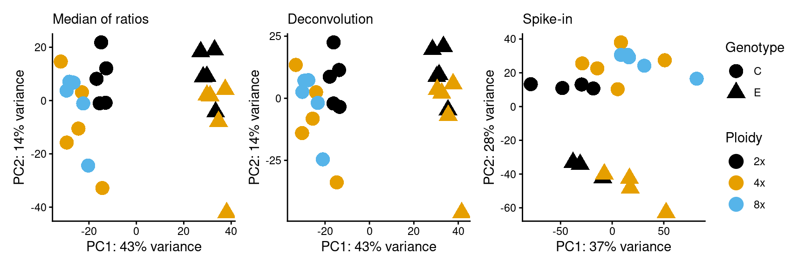

library(here)
library(tidyverse)
library(rplaza)
library(fs)
library(tximeta)
library(SummarizedExperiment)
library(HybridExpress)
library(DESeq2)
library(patchwork)
set.seed(123) # for reproducibility2 Data import, normalization, and exploratory analysis
In this chapter, you will learn how to read the transcript abundances produced with salmon (Patro et al. 2017) to R, normalize data using different approaches, and perform exploratory analysis on the data. At the end of this chapter, we will be able to:
- read the output of salmon (Patro et al. 2017) to a
SummarizedExperimentobject containing gene-level transcript abundances across samples. - normalize data by library size and by cell (with spike-in standards)
- explore sample grouping with principal component analyses.
We will start by loading the required packages.
2.1 Obtaining the example data
In this chapter, we will start from the output of salmon (Patro et al. 2017) for all samples (2 genotypes, 3 ploidy levels; see Preface for details), produced with the nfcore/rnaseq pipeline. salmon returns one folder per sample, each containing a quant.sf file with transcript abundances.
Let’s download the example data from Zenodo and store it in a temporary directory.
# Download example data to a temporary directory
fpath <- file.path(tempdir(), "example_data.zip")
download.file(
url = "https://zenodo.org/records/22938731/files/star_salmon.zip?download=1",
destfile = fpath
)
# Unzip file
unzip(fpath, exdir = tempdir())The output folder is called star_salmon. This is what it looks like:
# Check the contents of the `star_salmon` folder
salmon_dir <- file.path(tempdir(), "star_salmon")
fs::dir_tree(salmon_dir)/tmp/Rtmpw1lW2G/star_salmon
├── C2x_rep1
│ └── quant.sf
├── C2x_rep2
│ └── quant.sf
├── C2x_rep3
│ └── quant.sf
├── C2x_rep4
│ └── quant.sf
├── C2x_rep5
│ └── quant.sf
├── C4x_rep1
│ └── quant.sf
├── C4x_rep2
│ └── quant.sf
├── C4x_rep3
│ └── quant.sf
├── C4x_rep4
│ └── quant.sf
├── C4x_rep5
│ └── quant.sf
├── C8x_rep1
│ └── quant.sf
├── C8x_rep2
│ └── quant.sf
├── C8x_rep3
│ └── quant.sf
├── C8x_rep4
│ └── quant.sf
├── C8x_rep5
│ └── quant.sf
├── E2x_rep1
│ └── quant.sf
├── E2x_rep2
│ └── quant.sf
├── E2x_rep3
│ └── quant.sf
├── E2x_rep4
│ └── quant.sf
├── E2x_rep5
│ └── quant.sf
├── E4x_rep1
│ └── quant.sf
├── E4x_rep2
│ └── quant.sf
├── E4x_rep3
│ └── quant.sf
├── E4x_rep4
│ └── quant.sf
└── E4x_rep5
└── quant.sfWe will also need a table of sample metadata, available in the same Zenodo dataset.
# Get sample metadata from Zenodo directly to R
coldata <- read_tsv(
"https://zenodo.org/records/22938731/files/sample_metadata.tsv?download=1",
show_col_types = FALSE
)
head(coldata)# A tibble: 6 × 5
sample genotype ploidy genotype_ploidy spike_in
<chr> <chr> <chr> <chr> <lgl>
1 C2x_rep1 C 2x C2x TRUE
2 C2x_rep2 C 2x C2x TRUE
3 C2x_rep3 C 2x C2x TRUE
4 C2x_rep4 C 2x C2x FALSE
5 C2x_rep5 C 2x C2x TRUE
6 C4x_rep1 C 4x C4x TRUE Note that our metadata table includes variables describing ploidy level, genotype, genotype and ploidy (useful to extract model coefficients later on), and presence/absence of spike-in standards (because spike-ins were not reliable in particular samples).
2.2 Data import: from quant.sf files to a SummarizedExperiment object
To import data from quant.sf files, we will use the tximeta package (Love et al. 2020). For that, we need to create a data frame with columns files (paths to quant.sf files produced by salmon), and names (names to be used as sample IDs).
# Get paths to `quant.sf` files
qfiles <- list.files(
salmon_dir, recursive = TRUE, pattern = "\\.sf", full.names = TRUE
)
head(qfiles)[1] "/tmp/Rtmpw1lW2G/star_salmon/C2x_rep1/quant.sf"
[2] "/tmp/Rtmpw1lW2G/star_salmon/C2x_rep2/quant.sf"
[3] "/tmp/Rtmpw1lW2G/star_salmon/C2x_rep3/quant.sf"
[4] "/tmp/Rtmpw1lW2G/star_salmon/C2x_rep4/quant.sf"
[5] "/tmp/Rtmpw1lW2G/star_salmon/C2x_rep5/quant.sf"
[6] "/tmp/Rtmpw1lW2G/star_salmon/C4x_rep1/quant.sf"# Create data frame required by {tximeta}
tximeta_df <-data.frame(files = qfiles, names = basename(dirname(qfiles)))
head(tximeta_df) files names
1 /tmp/Rtmpw1lW2G/star_salmon/C2x_rep1/quant.sf C2x_rep1
2 /tmp/Rtmpw1lW2G/star_salmon/C2x_rep2/quant.sf C2x_rep2
3 /tmp/Rtmpw1lW2G/star_salmon/C2x_rep3/quant.sf C2x_rep3
4 /tmp/Rtmpw1lW2G/star_salmon/C2x_rep4/quant.sf C2x_rep4
5 /tmp/Rtmpw1lW2G/star_salmon/C2x_rep5/quant.sf C2x_rep5
6 /tmp/Rtmpw1lW2G/star_salmon/C4x_rep1/quant.sf C4x_rep1# Merge with `coldata` to include additional metadata variables
coldata <- left_join(tximeta_df, coldata, by = c("names" = "sample"))
head(coldata) files names genotype ploidy
1 /tmp/Rtmpw1lW2G/star_salmon/C2x_rep1/quant.sf C2x_rep1 C 2x
2 /tmp/Rtmpw1lW2G/star_salmon/C2x_rep2/quant.sf C2x_rep2 C 2x
3 /tmp/Rtmpw1lW2G/star_salmon/C2x_rep3/quant.sf C2x_rep3 C 2x
4 /tmp/Rtmpw1lW2G/star_salmon/C2x_rep4/quant.sf C2x_rep4 C 2x
5 /tmp/Rtmpw1lW2G/star_salmon/C2x_rep5/quant.sf C2x_rep5 C 2x
6 /tmp/Rtmpw1lW2G/star_salmon/C4x_rep1/quant.sf C4x_rep1 C 4x
genotype_ploidy spike_in
1 C2x TRUE
2 C2x TRUE
3 C2x TRUE
4 C2x FALSE
5 C2x TRUE
6 C4x TRUEWe can now import transcript abundances with the tximeta() function, which returns a SummarizedExperiment object with a count matrix of transcript abundances across samples, as well as sample metadata in the coldata slot.
# Get `SummarizedExperiment object
se_tx <- tximeta(coldata, skipMeta = TRUE)
se_txclass: SummarizedExperiment
dim: 54105 25
metadata(2): tximetaInfo countsFromAbundance
assays(3): counts abundance length
rownames(54105): AT1G01010.1 AT1G01020.2 ... ERCC-00170_gene
ERCC-00171_gene
rowData names(0):
colnames(25): C2x_rep1 C2x_rep2 ... E4x_rep4 E4x_rep5
colData names(5): names genotype ploidy genotype_ploidy spike_inNote that assays contain >54k features. This is because transcriptomics quantifies transcript abundances, so our estimates are at the transcript level. However, we’re often interested in abundances at the gene level (e.g., to find differentially expressed genes). Hence, we will need to aggregate our transcript-level abundances to gene-level abundances. To so do, we will need a correspondence table between transcript IDs and gene IDs (i.e., transcripts and their parent genes). There are many ways you can obtain such tables (e.g., from GTF files, from headers in the FASTA files for transcripts, etc). The PLAZA database (Van Bel et al. 2022) for comparative plant genomics already provides such tables for all of its ~150 species, so we will retrieve it from there.
# Retrieve transcript-to-gene mappings from PLAZA
ath_tx2gene <- rplaza::get_id_conversions("ath") |>
filter(alt_id_type == "tid") |>
select(txid = alt_id, geneid = original_id)
head(ath_tx2gene) txid geneid
1 AT1G01010.1 AT1G01010
2 AT1G01020.5 AT1G01020
3 AT1G01030.1 AT1G01030
4 AT1G01040.1 AT1G01040
5 AT1G01046.1 AT1G01046
6 AT1G01050.1 AT1G01050If you have spike-in controls in your data, you will also need to add those to the tx2gene table. In our data, feature IDs of spike-in standards start with ‘ERCC’.
# Adding ERCC features (spike-ins) to `tx2gene`
tx2gene_ercc <- data.frame(txid = rownames(se_tx)) |>
filter(str_detect(txid, "^ERCC")) |>
mutate(geneid = str_replace_all(txid, "_gene", ""))
head(tx2gene_ercc) txid geneid
1 ERCC-00002_gene ERCC-00002
2 ERCC-00003_gene ERCC-00003
3 ERCC-00004_gene ERCC-00004
4 ERCC-00009_gene ERCC-00009
5 ERCC-00012_gene ERCC-00012
6 ERCC-00013_gene ERCC-00013tx2gene <- bind_rows(ath_tx2gene, tx2gene_ercc)
head(tx2gene) txid geneid
1 AT1G01010.1 AT1G01010
2 AT1G01020.5 AT1G01020
3 AT1G01030.1 AT1G01030
4 AT1G01040.1 AT1G01040
5 AT1G01046.1 AT1G01046
6 AT1G01050.1 AT1G01050tail(tx2gene) txid geneid
38281 ERCC-00163_gene ERCC-00163
38282 ERCC-00164_gene ERCC-00164
38283 ERCC-00165_gene ERCC-00165
38284 ERCC-00168_gene ERCC-00168
38285 ERCC-00170_gene ERCC-00170
38286 ERCC-00171_gene ERCC-00171We can then aggregate our transcript abundances to the gene level using the summarizeToGene() function from tximport (Soneson et al. 2016). One of the main advantages of this method is that it aggregates transcript-level abundances to gene-level abundances while correcting for differences in transcript lengths (i.e., because longer transcripts tend to have more reads mapped to them). However, since we have 3’ tagged RNA-seq data, there are no differences in transcript lengths, because we didn’t sequence full transcripts. Hence, we will not correct for transcript length biases here. We can import abundances with:
# Aggregate abundances to the gene level
se <- summarizeToGene(
se_tx, tx2gene = tx2gene, countsFromAbundance = "no", skipRanges = TRUE
)
seclass: SummarizedExperiment
dim: 32600 25
metadata(4): tximetaInfo countsFromAbundance level assignRanges
assays(3): counts abundance length
rownames(32600): AT1G01010 AT1G01020 ... ERCC-00170 ERCC-00171
rowData names(0):
colnames(25): C2x_rep1 C2x_rep2 ... E4x_rep4 E4x_rep5
colData names(5): names genotype ploidy genotype_ploidy spike_inWe will also remove unnecessary assays and make sure our counts are integers (required by DESeq2).
# Remove `abundance` and `length` assays
assay(se, "abundance") <- NULL
assay(se, "length") <- NULL
# Round `counts` assay
assay(se, "counts") <- round(assay(se, "counts"))
seclass: SummarizedExperiment
dim: 32600 25
metadata(4): tximetaInfo countsFromAbundance level assignRanges
assays(1): counts
rownames(32600): AT1G01010 AT1G01020 ... ERCC-00170 ERCC-00171
rowData names(0):
colnames(25): C2x_rep1 C2x_rep2 ... E4x_rep4 E4x_rep5
colData names(5): names genotype ploidy genotype_ploidy spike_inThis is what the count matrix and coldata (sample metadata) look like:
assay(se, "counts") |> head() C2x_rep1 C2x_rep2 C2x_rep3 C2x_rep4 C2x_rep5 C4x_rep1 C4x_rep2
AT1G01010 25 26 37 10 9 32 26
AT1G01020 30 35 0 8 26 33 38
AT1G01030 5 12 9 3 4 8 11
AT1G01040 119 117 119 45 121 130 135
AT1G01050 534 809 508 150 522 892 659
AT1G01060 0 1 0 1 1 1 3
C4x_rep3 C4x_rep4 C4x_rep5 C8x_rep1 C8x_rep2 C8x_rep3 C8x_rep4
AT1G01010 24 22 22 47 15 59 18
AT1G01020 35 39 44 31 29 35 31
AT1G01030 16 8 7 8 6 7 2
AT1G01040 194 116 106 146 112 196 89
AT1G01050 831 525 462 645 599 733 663
AT1G01060 5 6 2 19 3 0 13
C8x_rep5 E2x_rep1 E2x_rep2 E2x_rep3 E2x_rep4 E2x_rep5 E4x_rep1
AT1G01010 33 17 13 18 20 17 69
AT1G01020 25 15 36 36 33 21 32
AT1G01030 12 4 20 7 8 3 17
AT1G01040 144 123 192 136 153 137 268
AT1G01050 759 654 912 575 658 521 989
AT1G01060 2 0 6 3 3 3 12
E4x_rep2 E4x_rep3 E4x_rep4 E4x_rep5
AT1G01010 24 11 20 11
AT1G01020 27 33 29 32
AT1G01030 5 9 10 6
AT1G01040 154 161 141 150
AT1G01050 704 750 541 518
AT1G01060 7 1 3 5colData(se) |> head()DataFrame with 6 rows and 5 columns
names genotype ploidy genotype_ploidy spike_in
<character> <character> <character> <character> <logical>
C2x_rep1 C2x_rep1 C 2x C2x TRUE
C2x_rep2 C2x_rep2 C 2x C2x TRUE
C2x_rep3 C2x_rep3 C 2x C2x TRUE
C2x_rep4 C2x_rep4 C 2x C2x FALSE
C2x_rep5 C2x_rep5 C 2x C2x TRUE
C4x_rep1 C4x_rep1 C 4x C4x TRUEIf you’re unfamiliar with SummarizedExperiment objects, please have a look at the vignette of the SummarizedExperiment package.
2.3 Computing size factors: library sizes and cell volumes
Before estimating differential expression test statistics, the DESeq2 package (Love et al. 2014) normalizes data using size factors stored in the sizeFactors variable of the colData slot. If this column doesn’t exist in colData, DESeq2 will automatically add it using its ‘median of ratios’ method to estimate for robust library size estimation. Hence, if we want to normalize our data using different approaches, all we need to do is add a sizeFactors column to the colData slot of our SummarizedExperiment object, and DESeq2 takes care of the rest. Here, we will demonstrate how to add size factors using three approaches: (i) DESeq2’s median of ratios method, which corrects for differences in library sizes across samples; (ii) deconvolution, which is a pooling-based approach that estimates size factors for each pool of samples (here, grouped by ploidy levels or ploidy+genotype), and then mathematically deconvolves them back to sample-specific size factors; and (iii) using spike-in standards to normalize data by cell volume.
We will first create alternative version of our data without spike-in features.
# Adding `sizeFactor` column to colData
## Method 1: Size factors with DESeq2's median of ratios
se_mr <- se[!grepl("ERCC", rownames(se)), ]
se_mr <- add_size_factors(se_mr, spikein = FALSE)
## Method 2: Size factors with spike-in controls
se_si <- se[, se$spike_in] # keep only samples with spike-ins
se_si <- add_size_factors(se_si, spikein = TRUE)
## Method 3: Size factors with deconvolution by `genotype_ploidy` level
se_de <- se[!grepl("ERCC", rownames(se)), ]
se_de$sizeFactor <- scuttle::pooledSizeFactors(
se_de, clusters = se_de$genotype_ploidy
)This is what size factors of each data set looks like:
colData(se_mr)DataFrame with 25 rows and 6 columns
names genotype ploidy genotype_ploidy spike_in
<character> <character> <character> <character> <logical>
C2x_rep1 C2x_rep1 C 2x C2x TRUE
C2x_rep2 C2x_rep2 C 2x C2x TRUE
C2x_rep3 C2x_rep3 C 2x C2x TRUE
C2x_rep4 C2x_rep4 C 2x C2x FALSE
C2x_rep5 C2x_rep5 C 2x C2x TRUE
... ... ... ... ... ...
E4x_rep1 E4x_rep1 E 4x E4x TRUE
E4x_rep2 E4x_rep2 E 4x E4x TRUE
E4x_rep3 E4x_rep3 E 4x E4x TRUE
E4x_rep4 E4x_rep4 E 4x E4x TRUE
E4x_rep5 E4x_rep5 E 4x E4x FALSE
sizeFactor
<numeric>
C2x_rep1 0.953897
C2x_rep2 1.167323
C2x_rep3 0.903449
C2x_rep4 0.305004
C2x_rep5 0.839966
... ...
E4x_rep1 1.306069
E4x_rep2 1.031768
E4x_rep3 1.065446
E4x_rep4 0.980296
E4x_rep5 1.109954colData(se_si)DataFrame with 21 rows and 6 columns
names genotype ploidy genotype_ploidy spike_in
<character> <character> <character> <character> <logical>
C2x_rep1 C2x_rep1 C 2x C2x TRUE
C2x_rep2 C2x_rep2 C 2x C2x TRUE
C2x_rep3 C2x_rep3 C 2x C2x TRUE
C2x_rep5 C2x_rep5 C 2x C2x TRUE
C4x_rep1 C4x_rep1 C 4x C4x TRUE
... ... ... ... ... ...
E2x_rep5 E2x_rep5 E 2x E2x TRUE
E4x_rep1 E4x_rep1 E 4x E4x TRUE
E4x_rep2 E4x_rep2 E 4x E4x TRUE
E4x_rep3 E4x_rep3 E 4x E4x TRUE
E4x_rep4 E4x_rep4 E 4x E4x TRUE
sizeFactor
<numeric>
C2x_rep1 1.16244
C2x_rep2 1.52170
C2x_rep3 2.11962
C2x_rep5 2.95147
C4x_rep1 1.56935
... ...
E2x_rep5 1.225778
E4x_rep1 0.731247
E4x_rep2 0.759366
E4x_rep3 0.671350
E4x_rep4 1.036524colData(se_de)DataFrame with 25 rows and 6 columns
names genotype ploidy genotype_ploidy spike_in
<character> <character> <character> <character> <logical>
C2x_rep1 C2x_rep1 C 2x C2x TRUE
C2x_rep2 C2x_rep2 C 2x C2x TRUE
C2x_rep3 C2x_rep3 C 2x C2x TRUE
C2x_rep4 C2x_rep4 C 2x C2x FALSE
C2x_rep5 C2x_rep5 C 2x C2x TRUE
... ... ... ... ... ...
E4x_rep1 E4x_rep1 E 4x E4x TRUE
E4x_rep2 E4x_rep2 E 4x E4x TRUE
E4x_rep3 E4x_rep3 E 4x E4x TRUE
E4x_rep4 E4x_rep4 E 4x E4x TRUE
E4x_rep5 E4x_rep5 E 4x E4x FALSE
sizeFactor
<numeric>
C2x_rep1 0.844490
C2x_rep2 1.098478
C2x_rep3 0.865043
C2x_rep4 0.312095
C2x_rep5 0.842669
... ...
E4x_rep1 1.176739
E4x_rep2 1.051706
E4x_rep3 1.067509
E4x_rep4 0.945871
E4x_rep5 1.146951Finally, we will filter out genes with too few counts across samples. There’s no universally good cut-off here, so we’d suggest playing with different values and seeing how many genes survive the filtering. Here, we will remove genes with counts <1 in >=50% of the samples. To make the data analysis workflow simpler and avoid code repetition, we will combine these three objects into a list.
# Create list of `SummarizedExperiment` objects
se_list <- list(MR = se_mr, SI = se_si, DE = se_de)
# Filter out genes with <1 count in >50% of the samples
se_list <- lapply(se_list, function(x) {
n <- round(ncol(x) * 0.5)
keep <- rowSums(assay(x) > 1) >=n
x[keep, ]
})
se_list$MR
class: SummarizedExperiment
dim: 18915 25
metadata(0):
assays(1): counts
rownames(18915): AT1G01010 AT1G01020 ... ATMG01380 ATMG01390
rowData names(0):
colnames(25): C2x_rep1 C2x_rep2 ... E4x_rep4 E4x_rep5
colData names(6): names genotype ... spike_in sizeFactor
$SI
class: SummarizedExperiment
dim: 18970 21
metadata(0):
assays(1): counts
rownames(18970): AT1G01010 AT1G01020 ... ATMG01380 ATMG01390
rowData names(0):
colnames(21): C2x_rep1 C2x_rep2 ... E4x_rep3 E4x_rep4
colData names(6): names genotype ... spike_in sizeFactor
$DE
class: SummarizedExperiment
dim: 18915 25
metadata(4): tximetaInfo countsFromAbundance level assignRanges
assays(1): counts
rownames(18915): AT1G01010 AT1G01020 ... ATMG01380 ATMG01390
rowData names(0):
colnames(25): C2x_rep1 C2x_rep2 ... E4x_rep4 E4x_rep5
colData names(6): names genotype ... spike_in sizeFactorWith this cut-off, we go from ~32k genes to ~19k genes.
2.4 Principal component analysis
We will now perform principal component analyses for each data set to have a visual summary of our data and explore sample grouping. We will first need to apply a variance-stabilizing transformation (to remove the dependence between the mean and the variance). We will do so by using the vst() function from DESeq2.
# Get variance-stabilized data
vsd_list <- lapply(se_list, function(x) {
dds <- DESeqDataSet(x, design = ~ genotype + ploidy)
vsd <- vst(dds, blind = TRUE)
vsd
})Don’t worry too much about the design formula at this point. We’ve only included ‘genotype + ploidy’ because we want these two variables in the PCA plot, but more details will come in the next chapter. We can now get PCA plots for each data set. Note that PCA for transcriptomic data should never be performed with the full data set. Instead, we use so-called highly variable features to maximize biological signal. By default, the plotPCA() from DESeq2 uses the top 500 genes with the highest variances, but this can have different meanings depending on the genome size. Instead, we’d suggest using a relative number (e.g., top 10% of the genes with the highest variances), so that it at least scales with the total number of genes.
# Get PCA plot
p_pca <- lapply(vsd_list, function(x) {
## Get PCA data for top 10% genes with the highest variances
pca_data <- plotPCA(
x, intgroup = c("ploidy", "genotype"), returnData = TRUE,
ntop = round(nrow(x) * 0.1)
)
## Plot using ggplot
pct_var <- round(100 * attr(pca_data, "percentVar"))
ggplot(pca_data, aes(x = PC1, y = PC2)) +
geom_point(aes(color = ploidy, shape = genotype), size = 5) +
theme_classic() +
xlab(paste0("PC1: ", pct_var[1], "% variance")) +
ylab(paste0("PC2: ", pct_var[2], "% variance")) +
scale_color_manual(values = palette.colors()) +
labs(color = "Ploidy", shape = "Genotype")
})
# Combine plots into a multi-panel figure
wrap_plots(
p_pca$MR + labs(subtitle = "Median of ratios"),
p_pca$DE + labs(subtitle = "Deconvolution"),
p_pca$SI + labs(subtitle = "Spike-in"),
nrow = 1
) +
plot_layout(guides = "collect")
The figure shows that DESeq2’s median of ratios and the deconvolution-based approach produce similar results, so we can simply choose one of them to avoid replicating the same analysis 3 times. Expectedly, these two methods produce different results compared to spike-in normalization, so we will need to keep the spike-in-normalized data as a separate data set.
When normalizing by library size (with DESeq2 or deconvolution), we see that PC1 mostly separates samples based on genotype. At the per cell level, however, genotypes are separated in PC2, and PC1 doesn’t seem to separate samples by any of the variables we’re interested in. In all cases, samples from the same ploidy+genotype seem to group well together, although outliers exist. It’s also important to look at other PCs, as they might contain additional information on sample grouping. To plot other PCs (e.g., PC1 vs PC3), you’d need to modify the code above to include pcsToUse = c(1, 3) in plotPCA().
Wrapping up
We will now save SummarizedExperiment objects to .rds files for further reuse in the following chapters. Since DESeq2 normalization and deconvolution produce equivalent results, we will only save the former.
# Save `SummarizedExperiment` objects to RDS files
## DESeq2 normalization
saveRDS(
se_list$MR, compress = "xz",
file = here("products", "results", "se_deseq2.rds")
)
## Spike ins
saveRDS(
se_list$SI, compress = "xz",
file = here("products", "results", "se_spikein.rds")
)Session info
This document was created under the following conditions:
─ Session info ───────────────────────────────────────────────────────────────
setting value
version R version 4.5.2 (2025-10-31)
os Ubuntu 22.04.5 LTS
system x86_64, linux-gnu
ui X11
language (EN)
collate en_US.UTF-8
ctype en_US.UTF-8
tz Europe/Brussels
date 2026-09-25
pandoc 3.6.3 @ /usr/lib/rstudio/resources/app/bin/quarto/bin/tools/x86_64/ (via rmarkdown)
quarto 1.8.25 @ /usr/local/bin/quarto
─ Packages ───────────────────────────────────────────────────────────────────
package * version date (UTC) lib source
abind 1.4-8 2024-09-12 [1] CRAN (R 4.5.2)
AnnotationDbi 1.72.0 2025-10-29 [1] Bioconductor 3.22 (R 4.5.2)
AnnotationFilter 1.34.0 2025-10-29 [1] Bioconductor 3.22 (R 4.5.2)
AnnotationHub 4.0.0 2025-10-29 [1] Bioconductor 3.22 (R 4.5.2)
archive 1.1.14 2026-07-30 [1] CRAN (R 4.5.2)
beachmat 2.26.0 2025-10-29 [1] Bioconductor 3.22 (R 4.5.2)
Biobase * 2.70.0 2025-10-29 [1] Bioconductor 3.22 (R 4.5.2)
BiocFileCache 3.0.0 2025-10-29 [1] Bioconductor 3.22 (R 4.5.2)
BiocGenerics * 0.56.0 2025-10-29 [1] Bioconductor 3.22 (R 4.5.2)
BiocIO 1.20.0 2025-10-29 [1] Bioconductor 3.22 (R 4.5.2)
BiocManager 1.30.27 2025-11-14 [1] CRAN (R 4.5.2)
BiocParallel 1.44.0 2025-10-29 [1] Bioconductor 3.22 (R 4.5.2)
BiocStyle 2.38.0 2025-10-29 [1] Bioconductor 3.22 (R 4.5.2)
BiocVersion 3.22.0 2025-10-07 [1] Bioconductor 3.22 (R 4.5.2)
biomaRt 2.66.2 2026-03-13 [1] Bioconductor 3.22 (R 4.5.2)
Biostrings 2.78.0 2025-10-29 [1] Bioconductor 3.22 (R 4.5.2)
bit 4.6.0 2025-03-06 [1] CRAN (R 4.5.2)
bit64 4.6.0-1 2025-01-16 [1] CRAN (R 4.5.2)
bitops 1.0-9 2024-10-03 [1] CRAN (R 4.5.2)
blob 1.3.0 2026-01-14 [1] CRAN (R 4.5.2)
cachem 1.1.0 2024-05-16 [1] CRAN (R 4.5.2)
cigarillo 1.0.0 2025-10-29 [1] Bioconductor 3.22 (R 4.5.2)
circlize 0.4.17 2025-12-08 [1] CRAN (R 4.5.2)
cli 3.6.5 2025-04-23 [1] CRAN (R 4.5.2)
clue 0.3-67 2026-02-18 [1] CRAN (R 4.5.2)
cluster 2.1.8.1 2025-03-12 [4] CRAN (R 4.4.3)
codetools 0.2-19 2023-02-01 [4] CRAN (R 4.2.2)
colorspace 2.1-2 2025-09-22 [1] CRAN (R 4.5.2)
ComplexHeatmap 2.26.1 2026-02-03 [1] Bioconductor 3.22 (R 4.5.2)
crayon 1.5.3 2024-06-20 [1] CRAN (R 4.5.2)
curl 7.0.0 2025-08-19 [1] CRAN (R 4.5.2)
DBI 1.2.3 2024-06-02 [1] CRAN (R 4.5.2)
dbplyr 2.5.1 2025-09-10 [1] CRAN (R 4.5.2)
DelayedArray 0.36.0 2025-10-29 [1] Bioconductor 3.22 (R 4.5.2)
DESeq2 * 1.50.2 2025-11-13 [1] Bioconductor 3.22 (R 4.5.2)
digest 0.6.39 2025-11-19 [1] CRAN (R 4.5.2)
doParallel 1.0.17 2022-02-07 [1] CRAN (R 4.5.2)
dplyr * 1.1.4 2023-11-17 [1] CRAN (R 4.5.2)
ensembldb 2.34.0 2025-10-29 [1] Bioconductor 3.22 (R 4.5.2)
evaluate 1.0.5 2025-08-27 [1] CRAN (R 4.5.2)
farver 2.1.2 2024-05-13 [1] CRAN (R 4.5.2)
fastmap 1.2.0 2024-05-15 [1] CRAN (R 4.5.2)
filelock 1.0.3 2023-12-11 [1] CRAN (R 4.5.2)
forcats * 1.0.1 2025-09-25 [1] CRAN (R 4.5.2)
foreach 1.5.2 2022-02-02 [1] CRAN (R 4.5.2)
fs * 1.6.6 2025-04-12 [1] CRAN (R 4.5.2)
generics * 0.1.4 2025-05-09 [1] CRAN (R 4.5.2)
GenomeInfoDb 1.46.2 2025-12-04 [1] Bioconductor 3.22 (R 4.5.2)
GenomicAlignments 1.46.0 2025-10-29 [1] Bioconductor 3.22 (R 4.5.2)
GenomicFeatures 1.62.0 2025-10-29 [1] Bioconductor 3.22 (R 4.5.2)
GenomicRanges * 1.62.1 2025-12-08 [1] Bioconductor 3.22 (R 4.5.2)
GetoptLong 1.1.0 2025-11-28 [1] CRAN (R 4.5.2)
ggplot2 * 4.0.1 2025-11-14 [1] CRAN (R 4.5.2)
GlobalOptions 0.1.3 2025-11-28 [1] CRAN (R 4.5.2)
glue 1.8.0 2024-09-30 [1] CRAN (R 4.5.2)
gtable 0.3.6 2024-10-25 [1] CRAN (R 4.5.2)
here * 1.0.2 2025-09-15 [1] CRAN (R 4.5.2)
hms 1.1.4 2025-10-17 [1] CRAN (R 4.5.2)
htmltools 0.5.9 2025-12-04 [1] CRAN (R 4.5.2)
htmlwidgets 1.6.4 2023-12-06 [1] CRAN (R 4.5.2)
httr 1.4.7 2023-08-15 [1] CRAN (R 4.5.2)
httr2 1.2.2 2025-12-08 [1] CRAN (R 4.5.2)
HybridExpress * 1.6.0 2025-10-29 [1] Bioconductor 3.22 (R 4.5.2)
IRanges * 2.44.0 2025-10-29 [1] Bioconductor 3.22 (R 4.5.2)
iterators 1.0.14 2022-02-05 [1] CRAN (R 4.5.2)
jsonlite 2.0.0 2025-03-27 [1] CRAN (R 4.5.2)
KEGGREST 1.50.0 2025-10-29 [1] Bioconductor 3.22 (R 4.5.2)
knitr 1.51 2025-12-20 [1] CRAN (R 4.5.2)
labeling 0.4.3 2023-08-29 [1] CRAN (R 4.5.2)
lattice 0.22-5 2023-10-24 [4] CRAN (R 4.3.1)
lazyeval 0.2.2 2019-03-15 [1] CRAN (R 4.5.2)
lifecycle 1.0.5 2026-01-08 [1] CRAN (R 4.5.2)
locfit 1.5-9.12 2025-03-05 [1] CRAN (R 4.5.2)
lubridate * 1.9.4 2024-12-08 [1] CRAN (R 4.5.2)
magrittr 2.0.4 2025-09-12 [1] CRAN (R 4.5.2)
Matrix 1.7-4 2025-08-28 [4] CRAN (R 4.5.1)
MatrixGenerics * 1.22.0 2025-10-29 [1] Bioconductor 3.22 (R 4.5.2)
matrixStats * 1.5.0 2025-01-07 [1] CRAN (R 4.5.2)
memoise 2.0.1 2021-11-26 [1] CRAN (R 4.5.2)
otel 0.2.0 2025-08-29 [1] CRAN (R 4.5.2)
patchwork * 1.3.2 2025-08-25 [1] CRAN (R 4.5.2)
pillar 1.11.1 2025-09-17 [1] CRAN (R 4.5.2)
pkgconfig 2.0.3 2019-09-22 [1] CRAN (R 4.5.2)
png 0.1-8 2022-11-29 [1] CRAN (R 4.5.2)
prettyunits 1.2.0 2023-09-24 [1] CRAN (R 4.5.2)
progress 1.2.3 2023-12-06 [1] CRAN (R 4.5.2)
ProtGenerics 1.42.0 2025-10-29 [1] Bioconductor 3.22 (R 4.5.2)
purrr * 1.2.1 2026-01-09 [1] CRAN (R 4.5.2)
R6 2.6.1 2025-02-15 [1] CRAN (R 4.5.2)
rappdirs 0.3.4 2026-01-17 [1] CRAN (R 4.5.2)
RColorBrewer 1.1-3 2022-04-03 [1] CRAN (R 4.5.2)
Rcpp 1.1.1 2026-01-10 [1] CRAN (R 4.5.2)
RCurl 1.98-1.17 2025-03-22 [1] CRAN (R 4.5.2)
readr * 2.1.6 2025-11-14 [1] CRAN (R 4.5.2)
restfulr 0.0.16 2025-06-27 [1] CRAN (R 4.5.2)
rjson 0.2.23 2024-09-16 [1] CRAN (R 4.5.2)
rlang 1.1.7 2026-01-09 [1] CRAN (R 4.5.2)
rmarkdown 2.30 2025-09-28 [1] CRAN (R 4.5.2)
rplaza * 0.99.0 2026-01-29 [1] Github (almeidasilvaf/rplaza@02fdd80)
rprojroot 2.1.1 2025-08-26 [1] CRAN (R 4.5.2)
Rsamtools 2.26.0 2025-10-29 [1] Bioconductor 3.22 (R 4.5.2)
RSQLite 2.4.5 2025-11-30 [1] CRAN (R 4.5.2)
rstudioapi 0.18.0 2026-01-16 [1] CRAN (R 4.5.2)
rtracklayer 1.70.1 2025-12-22 [1] Bioconductor 3.22 (R 4.5.2)
S4Arrays 1.10.1 2025-12-01 [1] Bioconductor 3.22 (R 4.5.2)
S4Vectors * 0.48.0 2025-10-29 [1] Bioconductor 3.22 (R 4.5.2)
S7 0.2.1 2025-11-14 [1] CRAN (R 4.5.2)
scales 1.4.0 2025-04-24 [1] CRAN (R 4.5.2)
scuttle 1.20.0 2025-10-30 [1] Bioconductor 3.22 (R 4.5.2)
Seqinfo * 1.0.0 2025-10-29 [1] Bioconductor 3.22 (R 4.5.2)
sessioninfo 1.2.3 2025-02-05 [1] CRAN (R 4.5.2)
shape 1.4.6.1 2024-02-23 [1] CRAN (R 4.5.2)
SingleCellExperiment 1.32.0 2025-10-29 [1] Bioconductor 3.22 (R 4.5.2)
SparseArray 1.10.8 2025-12-18 [1] Bioconductor 3.22 (R 4.5.2)
stringi 1.8.7 2025-03-27 [1] CRAN (R 4.5.2)
stringr * 1.6.0 2025-11-04 [1] CRAN (R 4.5.2)
SummarizedExperiment * 1.40.0 2025-10-29 [1] Bioconductor 3.22 (R 4.5.2)
tibble * 3.3.1 2026-01-11 [1] CRAN (R 4.5.2)
tidyr * 1.3.2 2025-12-19 [1] CRAN (R 4.5.2)
tidyselect 1.2.1 2024-03-11 [1] CRAN (R 4.5.2)
tidyverse * 2.0.0 2023-02-22 [1] CRAN (R 4.5.2)
timechange 0.3.0 2024-01-18 [1] CRAN (R 4.5.2)
txdbmaker 1.6.2 2025-12-11 [1] Bioconductor 3.22 (R 4.5.2)
tximeta * 1.28.3 2026-02-05 [1] Bioconductor 3.22 (R 4.5.2)
tximport 1.38.2 2025-12-22 [1] Bioconductor 3.22 (R 4.5.2)
tzdb 0.5.0 2025-03-15 [1] CRAN (R 4.5.2)
UCSC.utils 1.6.1 2025-12-11 [1] Bioconductor 3.22 (R 4.5.2)
utf8 1.2.6 2025-06-08 [1] CRAN (R 4.5.2)
vctrs 0.7.1 2026-01-23 [1] CRAN (R 4.5.2)
vroom 1.6.7 2025-11-28 [1] CRAN (R 4.5.2)
withr 3.0.2 2024-10-28 [1] CRAN (R 4.5.2)
xfun 0.56 2026-01-18 [1] CRAN (R 4.5.2)
XML 3.99-0.20 2025-11-08 [1] CRAN (R 4.5.2)
XVector 0.50.0 2025-10-29 [1] Bioconductor 3.22 (R 4.5.2)
yaml 2.3.12 2025-12-10 [1] CRAN (R 4.5.2)
[1] /home/faalm/R/x86_64-pc-linux-gnu-library/4.5
[2] /usr/local/lib/R/site-library
[3] /usr/lib/R/site-library
[4] /usr/lib/R/library
* ── Packages attached to the search path.
──────────────────────────────────────────────────────────────────────────────References
Love, Michael I, Wolfgang Huber, and Simon Anders. 2014. “Moderated Estimation of Fold Change and Dispersion for RNA-Seq Data with DESeq2.” Genome Biology 15 (12): 550.
Love, Michael I, Charlotte Soneson, Peter F Hickey, et al. 2020. “Tximeta: Reference Sequence Checksums for Provenance Identification in RNA-Seq.” PLoS Computational Biology 16 (2): e1007664.
Patro, Rob, Geet Duggal, Michael I Love, Rafael A Irizarry, and Carl Kingsford. 2017. “Salmon Provides Fast and Bias-Aware Quantification of Transcript Expression.” Nature Methods 14 (4): 417–19.
Soneson, Charlotte, Michael I Love, and Mark D Robinson. 2016. “Differential Analyses for RNA-Seq: Transcript-Level Estimates Improve Gene-Level Inferences.” F1000Research 4: 1521.
Van Bel, Michiel, Francesca Silvestri, Eric M Weitz, et al. 2022. “PLAZA 5.0: Extending the Scope and Power of Comparative and Functional Genomics in Plants.” Nucleic Acids Research 50 (D1): D1468–74.